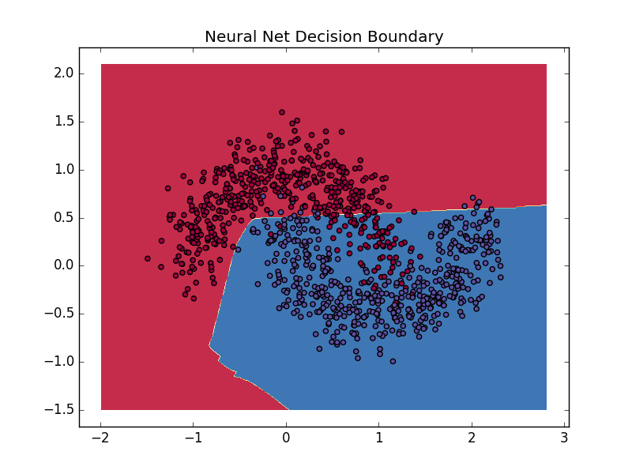
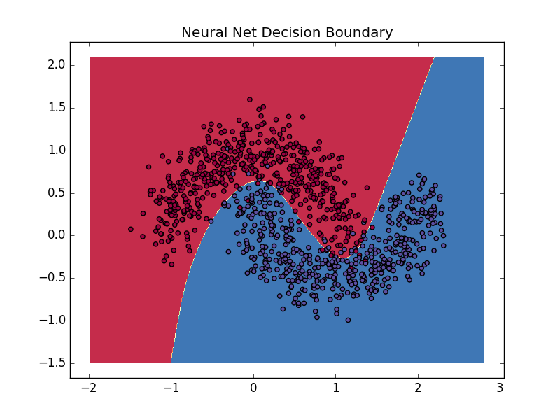
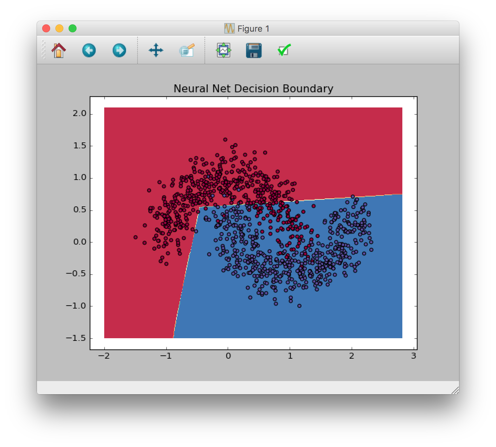
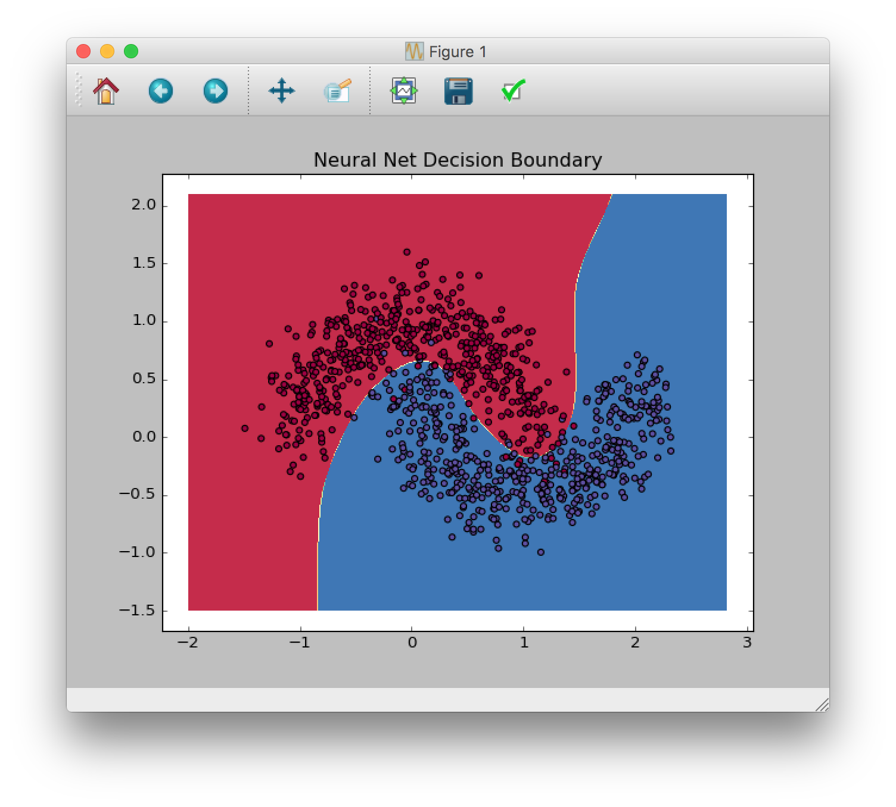
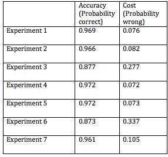

Training Neural Networks
David Wang
Team: David Wang, Cyril Saade, Rebecca Jellinek
CS440 P2
February 22, 2016
Team: David Wang, Cyril Saade, Rebecca Jellinek
February 22, 2016
Worked on the class NeuralNet -- I implemented the class-initialization with either 2-layers or 3-layers (depending upon whether or not you specified a number for hidden_nodes > 0), the including of the L2-Regularization factored into the compute_cost function's cumulative data loss, the including of the sigmoid activation function for compute_cost(), predict(), and fit(), and the overall back-propagation algorithm in fit(), for both 2-layer and 3-layer neural-nets, including an optional L2-Regularization term to the gradient-descent calculations for delta-Weight. I made sure to keep dimensions of input and output matrices consistent as the input_data training set was transformed through our neural net. Furthermore, I added extra code to help calculate the computed loss and accuracy of our predictions, after the specified number of iterations/epochs spent on the training set.
The purpose of this assignment is to design and implement a neural network in order to provide a curve-fitting model of a given dataset.
Given a set of data, we have created a Neural Network that outputs the probabilty of a specific point inside our data set to below to a certain class. Based on these propabilities, our program generates a curve in order to provide a fit to our data. Our neural net is therefore a classifier.
The first part of the assignment concists of implementing a two layer neural network in order to visualize a linear decision boundry learned by the model data set.
The second part of the assignment concists of training our neural net with non-linear data in order to analyze the effect that it has on our prediction.
Therefore, a linear dataset will require us to implement a 2-layer NN whereas a non-linear dataset will require us to implement a 3-layer NN (with oen hidden layer).
Give a concise description of the implemented method. For example, you might describe the motivation of current idea, the algorithmic steps or any formulation used in current method.
Our Neural Net class encapsulates various variables:
By default, our neural network does not contain any hidden layer; and it contains a total of four weights and four biases stored in two 2x2 matrices. Additionally, the hidden_dim parameter describes the dimension of the hidden layer (i.e. if it is initialized to 0, there will not be any hidden layer inside our Neural Network).
In our method, we don't initialize any nodes for our neural network. We assume that every node will have two connections to other nodes; therefore, we initialize two weights per node. All weights are biases are also initialized randomly.
Therefore, the goal of our program is to train the neural network by changing the randomly generated weights to weights that can better fit the given data using a back propagation algorithm
In order to create and train our neural net, we implemented four methods.
In this method, we generate random weights and biases based on the user input for our neural net. We also set the learning rate to the inputted value.
This method applies forward propagation in order to calculate the prediction formulated by our Neural Network. In this function, we compute the cross entropy loss and divides it with the number of data points in order to find the total error of our network. NB: this function is used in order to evaluate the performance of our neural network.
This method applies forward propagation based on current inputs in order to generate the output of our neural net. Additionally, this function returns the highest probability found based on our trained set. This function is seperated in two parts: for the neural network that has one hidden layer, it generates the output based on Wih (which is the weight from inner to hidden), and Who (which is the weight from the hidden layer to the output layer) in order to find the output.
This method trains the parameter of our neural net in order to fit the data that is given to us.
First, we apply forward propagation in order to generate the output of our NN. Second, we use our back-propagation in order to change the weights and biases of our NN so it could provide a better fit to our data. Our back propagation algorithm consists of updating the weights and biases of our NN based on differentials that are computed.
For a three-layer NN: beta_outer represents the actual output (softmax_scores) - desired output (1). It is used in order to compute the differentials that are used in order to update the following weights form hidden->output, beta_inner represents the beta_outer * (s - s^2). It is used in order to find the differential used to update the weights from input layer to hidden layer.
For a two-layer NN: Only one beta value is used in order to find the differentials used to update our four weights. Differentials are computed using the learning rate * beta.
The process of finding the differentials and motifying the weights and biases is repeated num_epochs times (=500) in order to train our NN (this value has been modified in our experiments).
Our main program loads the data from the given data sets and plots them in a figure. Additionally, it initializes the learning rate and the neural network. After initializing the Neural Network, we call the fit function in order to train our neural net. Afterwards, we invoke the compute_cost method in order to find the total cost and accuracy of our NN. Finally, we call plot_decision_boundary using the predict function of our trained neural network in order to generate the curve fitting.
We did several experiments based on different parameters:
Question 2: The 2-layer neural network model cannot learn non-linear decision boundaries. That is because our two layer neural network only applies linear transformation in order to find the output. The operation performed by our 2-layer NN is: output = Weight*input + bias which ultimately is a linear relationship.
Question 3: Yes, our 3-layer Neural Network can learn non-linear decision boundaries. That is because it will process the weighted data in a non-linear manner by using a sigmoid function. In fact, the weighted data that is computed by the first layer will be passed to the hidden layer which will use a non-linear function (sigmoid) in order to create an output. Therefore, because of the non-linear processing layer (i.e. the hidden layer), our decision boundary is not limited to linear responses only.
Question 4: The learning rate decides how fast our neural network is trained. Small learning rate will result in an unaccurate prediction (i.e. the fit will not represent the data well). A high learning rate could result in an unstable prediction (i.e. the curve generated by the fit will be too large).
 Question 5: The number of nodes inside the hidden layer plays a role in how non-linear our prediction is. Therefore, the greater the number of nodes ar inside the hidden layer, the more non-linear (and therefore more precise) our prediction will be. That is because, with a greater number of nodes, our hidden layer (which is ultimately the non-linear processing layer) will become larger.
 Question 6: Overfitting is the problem that occurs when we train too much our neural network (i.e. when num_epoch is way too high). Therefore, our prediction will be over-fitted and will no longer describe the dataset that we have as an input.
Methods to prevent overfitting:
Question 7: L2 regularization uses a tuning parameter which lets you change the complexity or smoothness of the model, or a selection of models of differing complexity/smoothness. Basically, it adjusts the complexity parameter and find the value which gives the best model predictions.
After implementing L2 regularization while increasing num_epochs, the over-fitting in our prediciton decreased and our outputed model was more accurate.
Our program has a high accuracy with minimal costs in experiments. The table shows our neural network’s ability to work as a classifier.
The neural network that we designed decides whether each point in a dataset belongs to a certain class or not. Our main program initializes a learning rate for the neural network, generates a curve based on the predictions formulated by the neural network, and plots data points in a figure. After training the neural network, we found the accuracy and cost of our neural net. The curve is a graphical representation of our neural net as a classifier. Considering the confusion matrix, our program produces output very close to the desired output of 1.
http://www.wildml.com/2015/09/implementing-a-neural-network-from-scratch/ Feb 22nd 2016